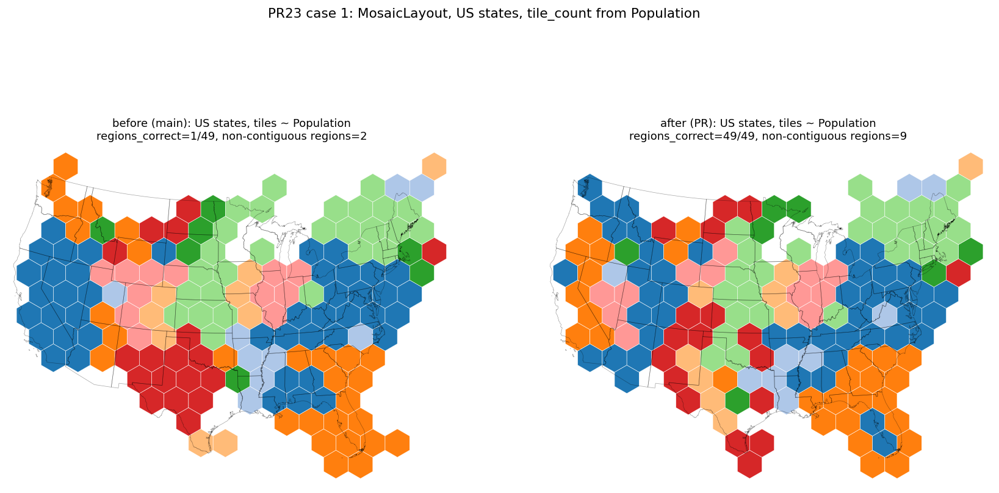
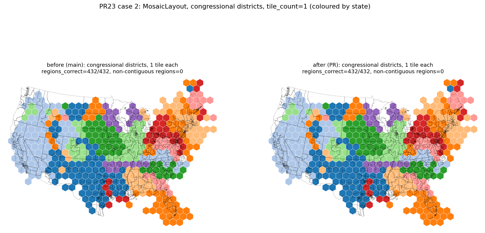
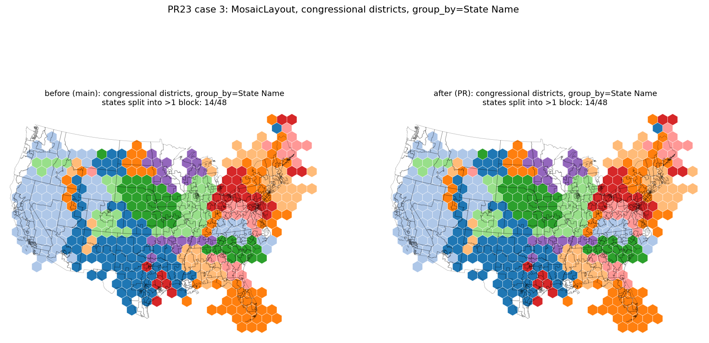
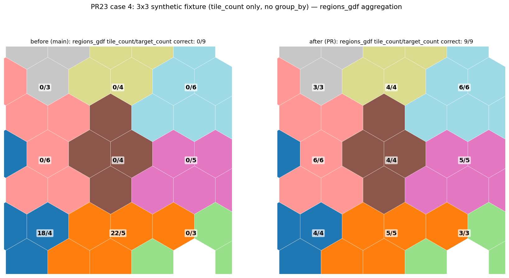

MosaicLayout read the N-level per-symbol group_ids array as if it were G-level per-geometry, corrupting connectivity repair and regions_gdf tile_count aggregation.
| Case | Before (main) | After (PR) |
|---|---|---|
| Case 1: US states, tile_count~Population | regions_correct=1/49, non-contiguous=2 | regions_correct=49/49, non-contiguous=9 |
| Case 2: congressional districts, tile_count=1 | regions_correct=432/432, non-contiguous=0 | regions_correct=432/432, non-contiguous=0 |
| Case 3: congressional districts, group_by=State Name | states split=14/48 | states split=14/48 |
| Case 4: 3x3 synthetic fixture (tile_count only) | regions_gdf correct=0/9, tile_counts=[18, 22, 0, 0, 0, 0, 0, 0, 0] | regions_gdf correct=9/9, tile_counts=[4, 5, 3, 6, 4, 5, 3, 4, 6] |

US states with tile_count~Population: regions_correct 1/49 before, 49/49 after.

Congressional districts, tile_count=1: unaffected by the fix (432/432 correct before and after).

Congressional districts with group_by=State Name: unaffected by the fix (14/48 states split before and after).

3x3 synthetic fixture, tile_count only: regions_gdf correct 0/9 before, 9/9 after, with tile_counts no longer mixing unrelated geometries.